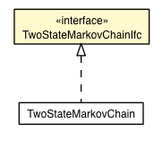

jsl.utilities.random.sp
Interface TwoStateMarkovChainIfc

- All Known Implementing Classes:
- TwoStateMarkovChain
public interface TwoStateMarkovChainIfc
getInitialState
int getInitialState()
getP0
double getP0()
getP01
double getP01()
getP1
double getP1()
getP11
double getP11()
getState
int getState()
reset
void reset()
- Sets the state back to the initial state
setInitialState
void setInitialState(int initialState)
setProbabilities
void setProbabilities(double p11,
double p01)
setState
void setState(int state)
Copyright © 2012 Manuel D. Rossetti. All Rights Reserved.